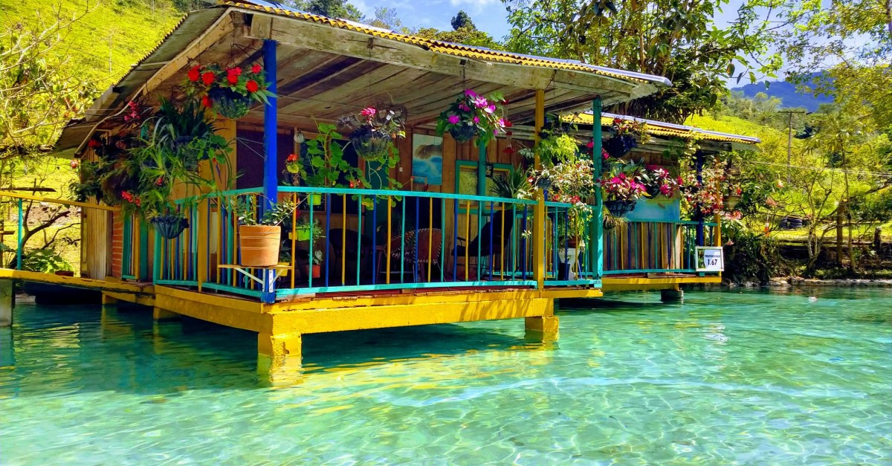
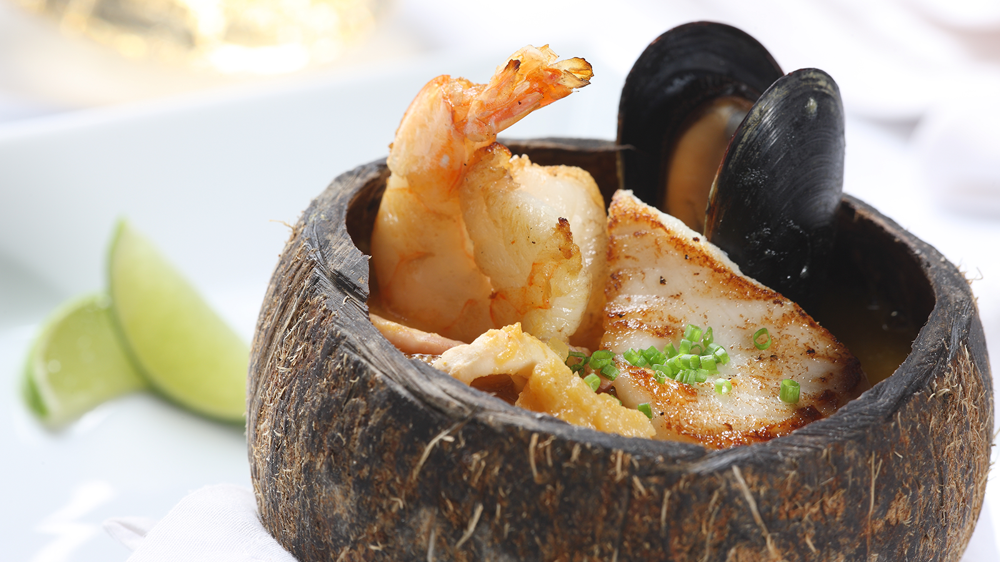
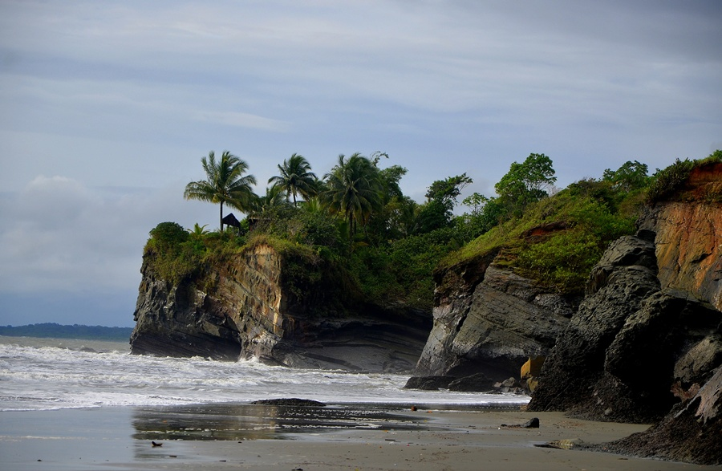
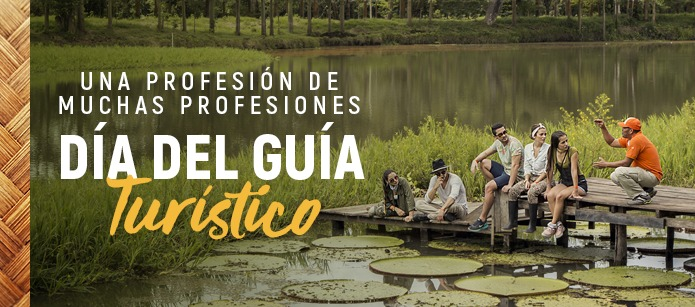

Atractivos Turisticos
Los atractivos turisticos del departamento del valle del cauca y parte del litoral pacifico esperan con ancias que los visites conoce desde los atractivos urbanos y rurales de la capital del valle del cauca hasta las hermosas reservas naturales del distrito especial, industrial, portuario, biodiverso y ecoturistico de Buenaventura.
Diversidad en gastronomias
Los mariscos y pescados se sirvan siempre frescos en sus platos, las cocinas del Suroccidente y Pacifico son protagonistas en la gastronomía colombiana, se destacan por sus platos típicos de frutos del mar, arroces, cazuelas, ceviches, fritos, etc, espléndidamente sazonados con los sabores exóticos de la selva.
Parte de nuestro litoral Pacifico
Las Playas de Juanchaco y Ladrilleros en el Pacífico de Colombia se localiza a 1 hora 30 minutos en lancha desde Buenaventura se encuentran al norte de Bahía Malaga, en el departamento del Valle del Cauca, dos destinos enmarcados por la espesura de la selva y el azul profundo del Océano Pacifico. Son lugares habitados por pescadores que han crecido escuchando los sonidos cadenciosos de la marimba y el tambor, los cuales hacen parte de la alegría propia de su raza. Agua clara es un río transparente ubicado en el corregimiento de Agua Clara en Buenaventura, rodeado por la selva en el departamento del Valle del Cauca, en este municipio podemos encontrar un caserío enmarcado de biodiversidad y tranquilidad de las regiones de Colombia.
Oportunidad para la gente de nuestra region
Apartir de la creacion de viaja con nosotros que es como se llama nuestra empresa, pensamos en una forma de retribuir economicamente a los lugareños que residen en las zonas a donde viajan los turistas que adquieren nuestro servicio, esto como, incentivando a las personas locales de estas zonas a que trabajen como guias , y como logramos esto por medio de una serie de capacitaciones y ya luego ser firma un contrato con nuestra empresa el cual le especifica la manera de como trabajar con nosotros.